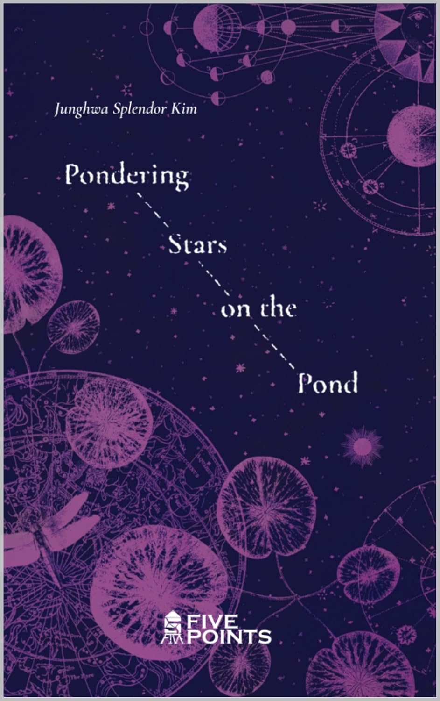

Traducción literaria
Poesía, narrativa y ensayo. Trabajo con el ritmo, la imagen y el silencio del original, no solo con su significado.
Poeta · Traductora · Corresponsal
Nacida en Corea del Sur, escribe desde Santiago de Chile. Poesía, relato y traducción entre coreano, español, inglés y francés.
Quién soy
Estudié filología hispánica y francesa en la Hankuk University of Foreign Studies. Leyendo a Pablo Neruda y a Gabriela Mistral decidí cruzar el mundo entero hasta el país que los había escrito.
En Chile obtuve el máster y el doctorado en literatura latinoamericana por la Universidad de Chile. Hoy vivo en Santiago, donde trabajo como corresponsal de KBS y como traductora. He publicado poemarios y relatos en las cuatro lenguas en las que pienso.
Traducir y escribir son para mí el mismo oficio: encontrar, en otra lengua, la temperatura exacta de lo que alguien quiso decir.
Servicios
Trabajo entre el coreano, el español, el inglés y el francés, con formación académica en literatura y experiencia diaria en medios de comunicación.
Poesía, narrativa y ensayo. Trabajo con el ritmo, la imagen y el silencio del original, no solo con su significado.
Manuscritos, catálogos, textos de contracubierta, dosieres de prensa y material de promoción para editoriales y agencias literarias.
Artículos, tesis y ponencias en el ámbito de las humanidades, con el respaldo de un doctorado en literatura latinoamericana.
Noticias, entrevistas, notas de prensa y contenido corporativo entre Corea y el mundo hispanohablante, desde la práctica de la corresponsalía.
Reuniones, entrevistas, ferias del libro y encuentros culturales entre delegaciones coreanas e hispanohablantes.
Lectura crítica de traducciones ya hechas, ajuste de estilo y adaptación cultural del texto a su público final.
Lenguas de trabajo
Publicaciones
He publicado poemarios y relatos en coreano, español, inglés y francés. Esta es la obra más reciente.

Último libro · 2025
Una colección de poemas en inglés atravesada por la nostalgia, la melancolía y el asombro ante la belleza de la vida. Estrellas que no están en el cielo, sino en el agua que las mira.
También disponible en Waterstones.
Lo que se ha dicho
«Una sutileza que la vuelve a la vez romántica, sensual, melancólica y mística.»
«Une la estética oriental con la sensualidad española.»
Currículum
Contacto
Presupuestos de traducción, entrevistas, lecturas y consultas editoriales.